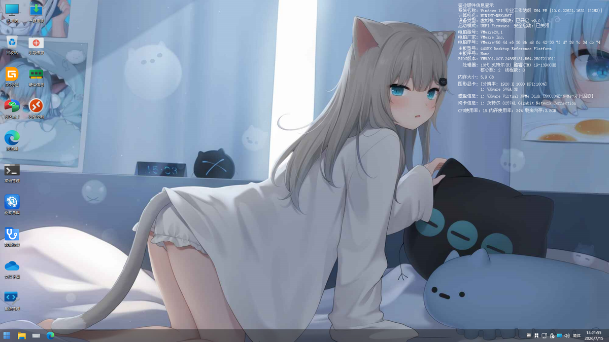

基于 Windows 预安装环境打造的轻量化操作系统 —— 无需安装到硬盘，U盘、光盘即可启动。集成系统重装、备份还原、数据救援全功能，始终为你提供一个实用的维护环境。

▲ Jianye PE 桌面实机截图 —— 精心设计的界面与丰富的内置工具
从系统安装到数据救援，Jianye PE 把最常用的维护能力全部装进口袋。
内置系统安装器，支持挂载 ISO 镜像一键重装 Windows，全程图形化操作，小白也能轻松上手。
对磁盘与分区进行完整备份与还原，系统崩溃前留好后路，出问题时一键恢复如初。
系统进不去也能读取硬盘数据，支持文件抢救、误删恢复与分区修复，把重要资料先救出来。
CPU-Z、AIDA64 等检测工具开箱即用，硬件信息、内存、硬盘健康状态一目了然。
内置网卡驱动与浏览器，进 PE 也能上网查资料、下载驱动、远程求助。
DiskGenius 等磁盘工具齐全，分区调整、引导修复、MBR/GPT 转换随心操作。
无需安装到硬盘，一只 U 盘就是你的随身工具箱。
通过下载页面获取 Jianye PE 镜像文件，并校验完整性。
使用 Ventoy、Rufus 等工具将镜像写入 U 盘或刻录到光盘。
开机选择 U 盘启动，进入 Jianye PE 桌面，开始你的维护之旅。